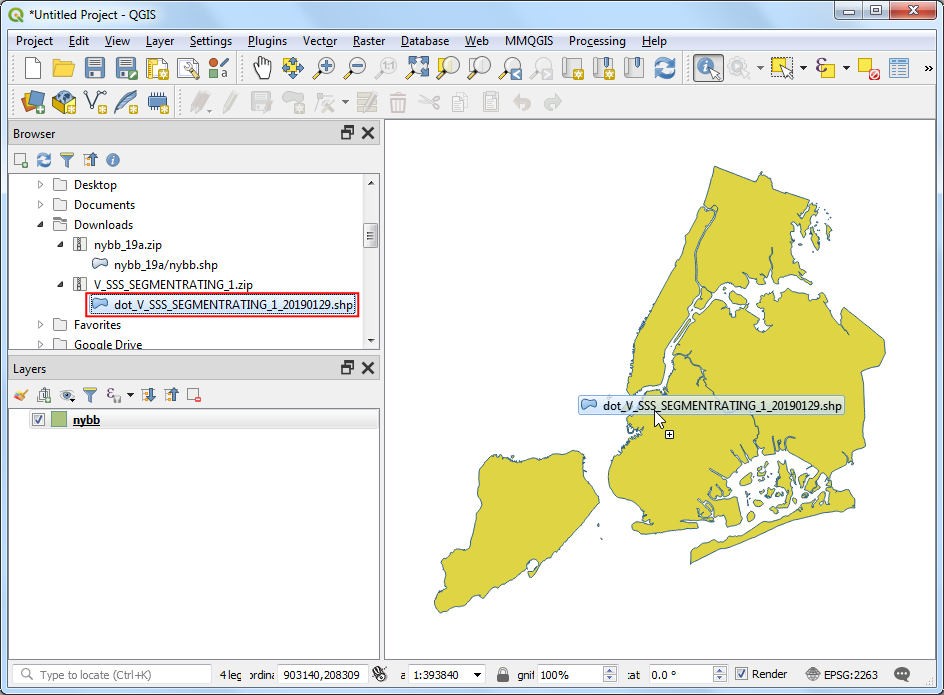
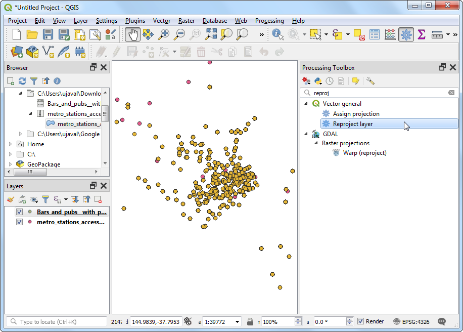
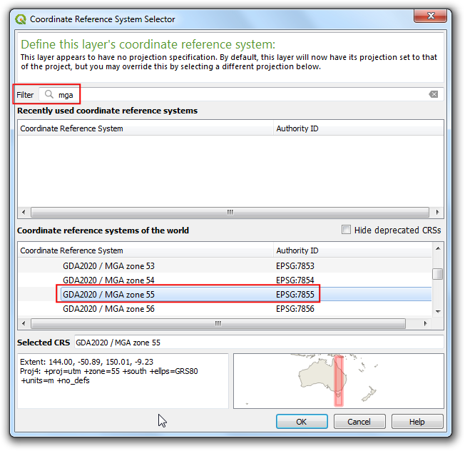
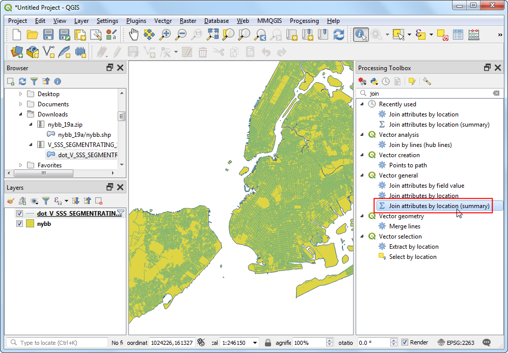
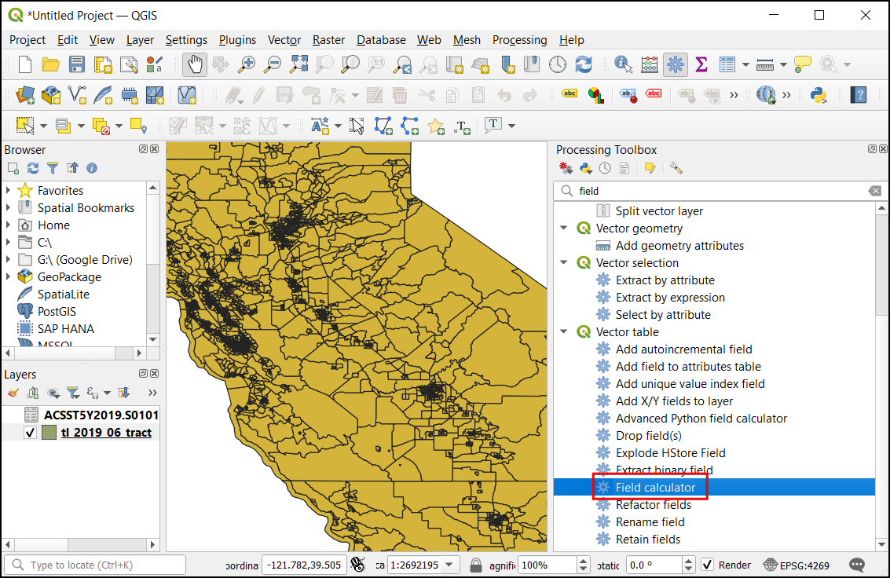

Raster Mosaicing and Clipping (QGIS3)¶
This tutorial explores basic techniques for working with rasters in QGIS such as mosaicing and subsetting.
Overview of the task¶
We will download elevation data for Sri Lanka in form of SRTM tiles, merge them and clip the resulting mosaic to the country boundary.
Other skills you will learn¶
Using the Hillshade renderer to visualize elevation data.
Get the data¶
Land Processes Distributed Active Archive Center (LP DAAC) provides NASA Shuttle Radar Topography Mission (SRTM) Global 1 arc second dataset as elevation tiles.
An easy interface to download tiles for a given area is the 30-Meter SRTM Tile Downloader by By Derek Watkins. Download the individual SRTM tiles covering Sri Lanka. Note that you will need a free Earth Data account to download the data.

We will also need the Admin 0 - Countries shapefile from Natural Earth.
For convenience, you may directly download a copy of the datasets from the links below:
Data Source [SRTM] , [NATURALEARTH]
Procedure¶
Open QGIS and locate the downloaded files in the Browser panel. Expand individual zip files to show the
.hgtfiles. Hold the Ctrl key and select all individual files. Once selected, drag them to the canvas.

You will see 11 individual layers loaded in the Layers panel and displayed in the canvas. We will merge these individual tiles into a single mosaic. Go to .

Search and locate the tool. Double-click to launch it.

In the Merge dialog, click the … button next to Input layers. Click Select All to select all individual layers.

As mentioned in the dataset layer details, the input data type is 16-bit signed integer. To maintain data integrity, we should keep the same data type for the merged layer. Select
Int16as the Output data type. Also the default output data format is GeoTiff. GeoTiff files can get very large if not compressed. ChooseHigh Compressionas the Profile. Click Run.

Once the processing finishes, the a new layer
OUTPUTwill be added to the Layers panel. In case the layer is not at the top of the stack, select it and drag it to the top of the Layers panel.

You will see that the
OUTPUTlayer contains the merged elevation data from the individual input tiles. The default visualization only shows the pixel values in the range from 0-255. But our data contains pixels with values -14 to 2371, resulting in a low contrast rendering. Let’s change it a better visualization. Click the Open the layer Styling panel button in the Layers panel.

In the Layer Styling panel, click the Render type dropdown and select
Hillshaderenderer. This rendering option is particularly well-suited for elevation data.

Another common operation when working with rasters is to clip a raster to your area of interest. For this tutorial, we will clip the merged layer to the country boundary for Sri Lanka. Locate the downloaded
ne_10m_admin_0_countries.zipfile and expand it. Drag thene_10m_admin_0_countries.shpfile to the canvas.

Select the newly added
ne_10m_admin_0_countrieslayers in the Layers panel. Click the Select Features by area or single click button on the Attributes Toolbar. Once selected, click the polygon for Sri Lanka to select it.

Keep the selection as it is and open . Search and locate the tool. Double-click to launch it.

In the Clip Raster by Mask Layer dialog, set
OUTPUTas the Input Layer. Selectne_10m_admin_0_countriesas the Mask layer, and check the Selected features only checkbox. Enter0.0000as the Assign a specified nodata value to output bands. As before, chooseHigh compressionas the Profile. Click Run.

A new layer
OUTPUTwill be added to the Layers panel. At this point, it may be hard to see the output because we have too many overlapping layers visible. Click the Manage Map Themes button in the Layers panel and chooseHide All Layers.

Turn on only the latest
OUTPUTlayer and style it with theHilshaderenderer as done before.

The merged and subsetted output elevation layer for Sri Lanka is ready.

If you want to give feedback or share your experience with this tutorial, please comment below. (requires GitHub account)